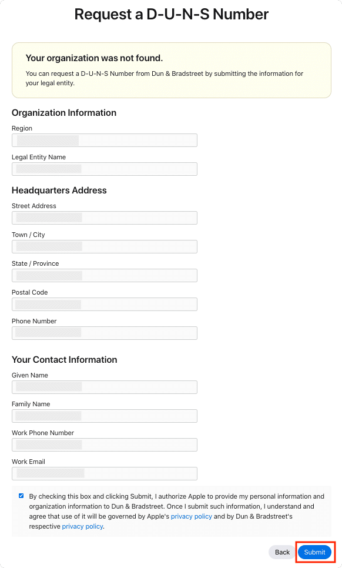
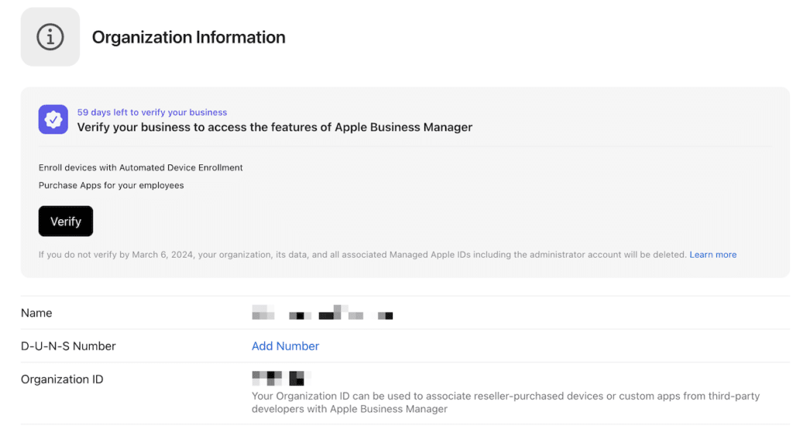
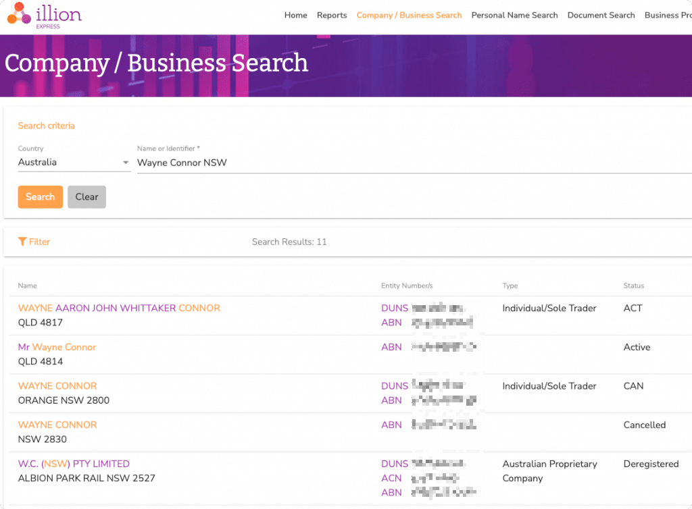
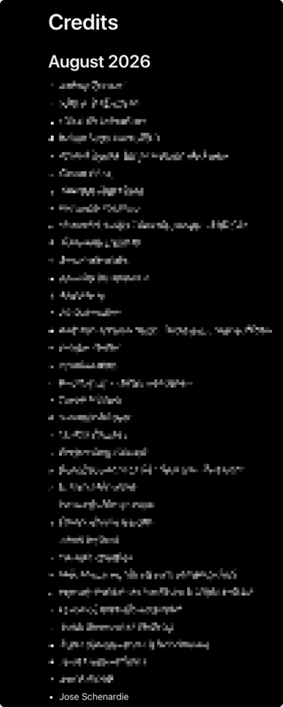
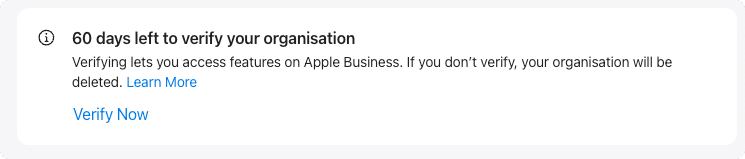
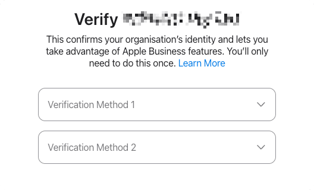
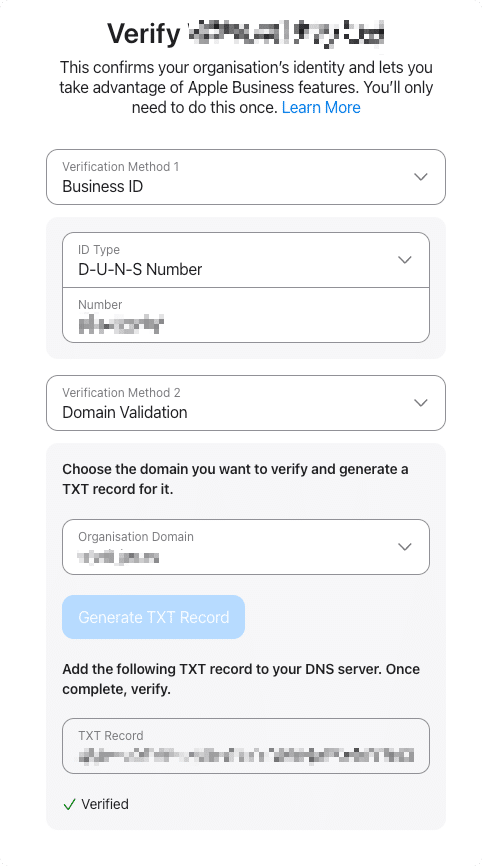
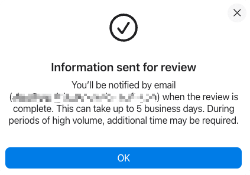
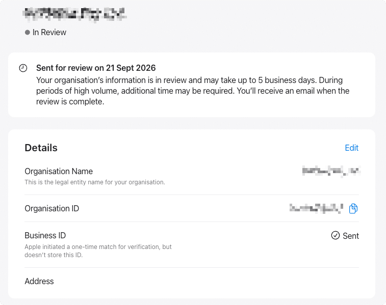

If you needed to stand up an Apple Business Manager from scratch before, you probably already heard of dun and bradstreet (aka D-U-N-S number) and know the world of pain that was to get it working.
Applying for a D-U-N-S Number
If you, like me, had no idea what that was, you could apply from within the ABM portal.

The catch is that the person applying under contact information could not be the same one (phone or e-mail) as the one who applied for ABM itself, overcomplicating things. On top of that, that person would receive a call and had to be a director or someone high enough to “validate” the business. Once the application was done, you would have 60 days to get your D-U-N-S issued so you could click on “Add Number”, and provide your number.

Up to a point, this was the process. Or at least I thought. That is when I found out about https://express.illion.com.au, which was a website that would allow you to search a company (any company) by the name, and would tell you its D-U-N-S number.

Note that at the time of this reading it seems that company was sold into another company and the search is deactivated.
Exploiting the process
Now, something really interesting would happen when you clicked that ‘Add Number” button and provided another company D-U-N-S number. It would pull the contact information linked to that company, including:
- duns
- name
- address1
- address2
- address3
- city
- region
- postalCode
- country
- website
- phone
- isMailDeliverable
Now we have something that allows us to list any company d-u-n-s and a call via ABM which allows us to enumerate contact details of any company which ever applied to D-U-N-S.
As soon as I found our about this vulnerability (20/01/26), I submitted a report at https://security.apple.com/, and ~5 months later (25/06/26) I got a confirmation the vulnerability has been addressed.
Took a little while, but the credits have been issued on the August 2026 list (https://support.apple.com/en-us/102774)

The new ABM experience
Under the new process, when you click “Verify Now”, you get redirected to another page, where you can pick 2 distinct verification methods.


Whithin those, you can choose:
- Business ID – Add a D-U-N-S Number or Employer Identification Number (EIN)
- Business License – Upload an official document
- Domain Validation – Add a TXT record to your DNS server
- Energy Bill – Upload an official document
- *GST Registration – Upload an official document
- Lease of Property Agreement – Upload an official document
- Organisation Document – Upload an official document
- Other – Upload an official document
- Utility Bill – Upload an official document
* I believe the GST (Australian Tax) should show an equivalent on your country.
In my case, I chose D-U-N-S and Domain Validation

Notice that now entering a D-U-N-S number doesn’t query any information about the company.

Once sent, your “Business ID” will change to sent and you should receive an email in up to 5 business days with an answer.
